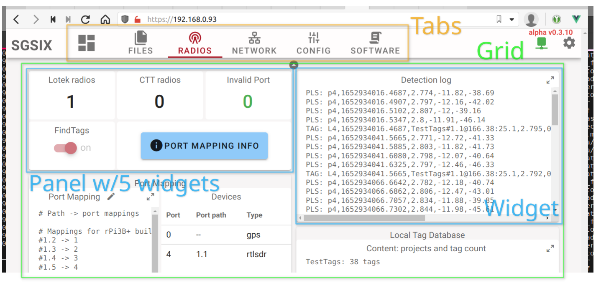
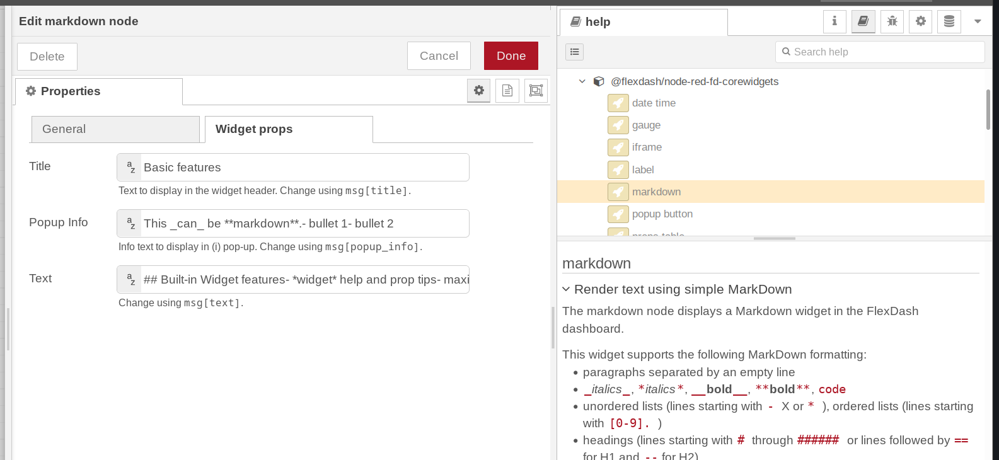
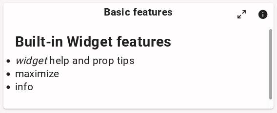
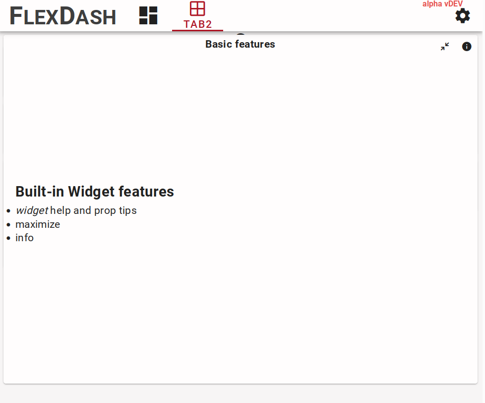
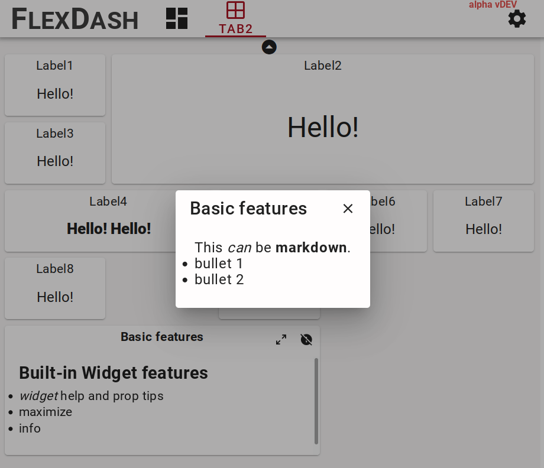
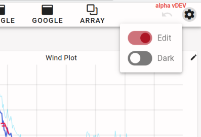

Core Concepts
Tabs, grids, panels, widgets
The FlexDash UI is organized hierarchically in tabs, grids, panels, and widgets. Panels are optional in that widgets can be placed directly into grids.
Tabs are full pages that display information. Each tab has an icon and/or a name and these are shown in the top-nav bar or the "hamburger button" activated left-nav on small devices.

Each tab can have one or multiple grids filled with widgets. Each grid spans the full width of the page and has variable height depending on the widgets it contains. The grid uses the relatively new CSS grid functionality.
All widgets in a grid are in a 1-dimensional order, they are dropped into the grid in that order starting at the top-left corner and going across to the right and then wrapping to the next row.
A widget is a display element that visualizes some data. It looks like a card in the UI and may have a title. A typical widget has a number of inputs called props (short for properties) that can be set to a default value in the correspoding Node-RED node's properties tab. All the properties can also be set/overridden dynamically using Node-RED messages. It is thus just as easy to change the color or label of a gauge as its value.
There is a special panel widget that can contain other widgets. The panel is an empty card that contains a CSS grid with a specific number of columns and rows. This grid can then be filled just like a grid.
The important difference is that the panel's CSS grid does not reflow or change with display size. Once configured to have a certain number of rows and columns and filled with an arrangement of widgets everything will stay exactly like that regardless of display or browser window resizing. This allows complex arrangements of widgets to be created that contain a number of visualizations and input elements whose placement relative to one another is important.
Built-in widget features
All widgets have a title prop and a popup_info prop.
The title is shown at the top-center of the widget by default, but this can be overridden
by the widget's implementation. The gauge widget is an example for that.

The popup info prop, if set, causes a small icon to be shown at the top-right of the widget and when clicked, this brings up a pop-up panel displaying the text of the prop using markdown formatting. This is intended to provide additional info about what the widget shows. Given that any prop can be set dynamically, this could even be used to display time-sensitive info.

 
Each widget node has help text in the Node-RED editor's "info" pane and each widget prop
has a short help tip below the text entry field, including info on which field of an
incoming msg can be used to set the prop dynamically.
The help text comes from the help property in the widget's component definition and the
tips come from the tip field in each prop's definition in the component.
Many widgets have an icon to maximize the widget so it can be read more easily.
This is enabled by adding a full_page: true field to the widget's component definition.
Node-RED nodes, config nodes, and saving the config
The integration of FlexDash into Node-RED relates widgets and nodes 1-1, i.e., each widget in the dashboard has a corresponding node in some Node-RED flow. Messages sent to one of these "flexdash nodes" can be processed in the node but are generally forwarded to the corresponding widget's props. Similarly, the effect of actions taken by the user on widgets (such as pressing a button) is to cause the corresponding node to emit a message.

The other elements of FlexDash (dashboards, tabs, grids, and panels) are represented by config nodes in Node-RED. Associating a flexdash node with a panel or grid config node appends it to the end of the list of widgets shown in that panel or grid. The position of a node within the panel or grid or its size cannot be changed from within the Node-RED editor. Instead, the edit mode of FlexDash must be used.
The overall configuration of the dashboard is saved as part of the flexdash nodes and config nodes. This means that when flows are deployed in the flow editor the changes are shown in the dashboard and saved to the standard Node-RED flows file. If changes are made using the FlexDash edit mode (e.g. reordering or resizing widgets) the flow editor enables the "deploy" button and a deploy is needed to persist the changes made.
Dashboard state, data, and messages
Communication between Node-RED and the dashboard is based on mirroring state.
This is in contrast to being based on event messages.
For example, the props (inputs) of a gauge may be set to
{ color: "green", value: 55, min: 0, max: 100}
and this state will be sent to all connected browsers as well as any
browsers that connect in the future (unless the state is changed first, of course).
This is contrast to sending a gauge an event message like set(color, "green") to
which connected browsers react but which future browsers miss.
The difference between state and event messages may seem insignificant, but it becomes important when more complex data structures are in play. For example, a graph widget may plot the temperature in real-time. In that case, one of its inputs will be the data series, i.e, all the time-temperature tuples it ought to display in the form of an array. To add each new data value in real time the new value needs to be appended to the array and typically the oldest value rotated out. This means that the entire array needs to be (at least conceptually) re-set and re-transmitted to all the connected dashboards. It is not possible to just send a "add a value" message to the widget, however, certain common operations such as appending a value to an array may be available as optimization.
The main benefit of the state mirroring employed by FlexDash is that all connected browsers display the same data independent of when they connected, this avoids the issue where newly connecting browser don't get some past messages and display incomplete data. (Note that it is possible to explicitly send some state only to specific browsers to implement specific interactions.)